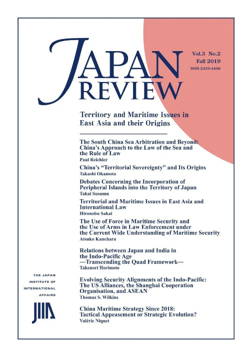
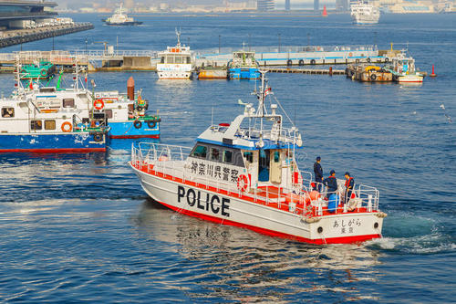
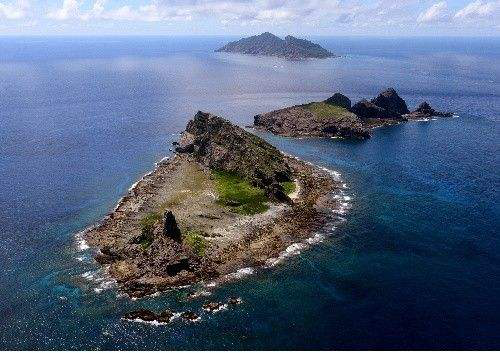

收录于合集

作品简介
【作者】 坂元茂树 Shigeki Sakamoto 同志社大学法律系教授，研究领域国际法学。
【编译】 戴赟 （国政学人编译员 外交学院拟录取硕士）
【校对】 柯孜凝
【审核】 李博轩
【排版】 张越涵
【美编 】聂涵琳
【来源】 Sakamoto, S. (2019). Restructuring the Maritime Order. Japan Review, 3(1).
期刊简介

《日本评论》（Japan Review）由日本国际问题研究所（The Japan Institute of International Affairs）刊行，创刊宗旨是向日语学术圈以外的研究者们介绍日本学者的学术成果，内容涉及日本国际关系相关的诸方面。日本国际问题研究所是日本国际问题研究类的顶级智库，与日本外务省关系密切。
重建海洋秩序
Restructuring the Maritime Order
坂元茂树
摘要
国际海洋秩序是过去几个世纪世界和平与繁荣的基石，近年来《联合国海洋法公约》(以下简称《公约》)也对这一秩序加以巩固。不过，随着中国等新兴海洋大国的崛起以及海洋事务的拓展，海洋秩序目前面临着各种变化。本文在指出现有秩序存在局限性的同时，也论证了以《公约》为基础，通过必要的改革来维持现有海洋秩序的重要性。
文章导读
01
海洋法面临的新挑战
海洋秩序由一种二元结构组成，分为狭长领海和所有国家都可以自由航行与使用的公海。此外，所有国家都可以自由航行和使用它们认为合适的水域。编纂这一秩序的海洋法是国际法中最久远的领域之一。
以海上贸易为目的的公海航行自由符合国际社会的普遍利益。因此，威胁到这种共同利益的海盗被视为“人类的公敌”( hostis humani generis )。早在17世纪，海盗就被定义为一种各国都对其拥有“普遍管辖权”的犯罪行为，由每个国家自行决定对其惩罚。然而，在二战后得到重大发展的国际人权法对反海盗法的实行采取了一种立场，即呼吁在可能的情况下，在48小时内将初次拘留的犯罪嫌疑人送交法官。在这样的情况下，海洋法所涉及的一个经典问题已成为一项新的人权挑战。
移民问题也导致了类似的紧张局势。海洋法规定所有国家的船舶都有责任在可能的情况下救助在海上遇到的任何遇险人员。这自然包括将受困者运送到安全地点的义务。然而，最近越来越多的国家如果发现遇险人员是在拥挤船只上的无证移民或难民，他们则会一直逃避保护被困者的责任。他们通过禁止救援船只进入他们的领海来做到这一点。这么做的原因是，一旦移民进入一国的领水，他们就属于《关于难民地位的公约》的保护范围，这要求缔约国为移民提供难民听证会，并禁止缔约国将难民送回他们可能面临迫害的国家（不推回原则，the Principle of Non- Refoulement）。随着海洋法对救助和保护遇险人员作出要求，以及国际人权法呼吁维护受难者的权利，这些国家正在对此做出回应，试图缩小其保护个人生命的义务的空间范围（包括领海在内），这与保护人权的宗旨是冲突的。

02
《联合国海洋法公约》及其判例扩充
东海和南海的海洋资源开发也面临类似的紧张局势。作者认为，中国已经实现了成为“海上强国”的目标。作为世界第二大经济体，中国经济发展需要海洋资源支撑。中国和日本尚未就专属经济区和大陆架之间的划界达成协议。（译者注：日本自知在大陆架制度上乏理，处于不利状态，因此在专属经济区问题上与中国纠缠，有意混淆“大陆架制度”与“专属经济区”的区别，并通过媒体渲染，蒙蔽不了解真相的日本国内外群众，营造中国侵犯日本专属经济区的假象。）作者从《公约》专属经济区制度的来主张日方的一些权利。作者认为，根据《公约》第74条第1款和第83条第1款的规定，海岸相向国或相邻国家间大陆架的界限，应在国际法院规约第三十八条所指国际法的基础上以协议划定，以便得到公平解决。《公约》还要求争端各方保持克制，根据第74条第3款和第83条第3款的规定，在达成第1款规定的协议以前，有关各国应基于谅解和合作的精神，尽一切努力作出实际性的临时安排，并在此过渡期间内，不危害或阻碍最后协议的达成。本文还引用了相关案例，在2007年9月17日裁决的圭亚那诉苏里南案中，法院裁定，单方面开采未划定海域的石油和天然气储备构成对危及或阻碍最终协议的达成以及违反约束性义务。鉴于此，日本对中国在东海的天然气勘探行为颇有微词。
本文中，日方对南海仲裁的立场也与中方不同，甚至认为南海仲裁案这一司法程序正在逐步发展和充实《公约》的规范内容。（译者注：南海仲裁案，是一个临时组建的仲裁庭，就菲律宾阿基诺三世政府单方面提起的南海仲裁案进行的所谓“裁决”，其实质是披着法律外衣的政治闹剧。）

03
生物多样性和国家管辖范围以外资源的可持续利用
《公约》作为一项现行条约，为应对新的问题和挑战而拟订各种执行协定来发展和演变其内容。二十一世纪出现了《公约》起草者从未预料到的挑战。一是海洋遗传资源的开发，另一个是海洋保护区的建立。
目前，只有少数发达工业国能够获得并利用海洋遗传资源。这一情况引起了发展中国家的关注，即公海自由原则将适用于海洋遗传资源的开发和利用。发展中国家注意到，一国管辖范围以外地区的洋底及其资源被视为人类共同遗产的一部分，这些地区生存的海洋生物也如此。发展中国家主张，处于深海海床的海洋遗传资源是人类的共同遗产，因此，利用这些资源所产生的任何利益都应在国际社会成员之间公正、公平地分配。
《公约》中没有界定海洋保护区。在越来越需要保护海洋环境及其生物多样性的情况下，各个国家都在采取措施，在本国领海和专属经济区内建立海洋保护区，每个国家都根据国内法建立自己的对海洋保护区的界定和管理制度。
2015年6月19日，联合国大会通过了根据《公约》制定一项国家管辖范围以外区域海洋生物多样性（Biological Diversity of Areas Beyond National Jurisdiction, BBNJ）养护和可持续利用议题的决议（A/RES/69/292）。该决议呼吁国际社会进行国际谈判，作为一个整体来解决海洋遗传资源问题，包括利益分享、海洋保护区在内的区域管理工具、环境影响评估、海洋能力建设和海洋技术转让等。因此，联合国开始制定一项关于国家管辖范围以外区域海洋生物多样性的国际协定。这项工作从成立筹备委员会开始，筹备委员会在2016年3月至2017年7月期间举行了四次会议。
在筹备委员会最后一次会议上发表的草案要点的非正式文件中，委员会主席对达成新协议的想法、提案和备选方案作了广泛的汇编，其中包括各代表团未能达成任何共识的一系列事项。对于协议管理原则适用公海自由还是人类共同遗产仍然存在很大分歧。
国际社会是否会着手对现有的海洋秩序进行重大调整，将养护和可持续利用国家管辖范围以外的区域海洋生物多样性作为该秩序的一个新的共同目标? 或者，国际社会是否会根据2017年12月24日通过的联合国关于BBNJ的决议（A/RES/72/249）重申会议的工作和结果应完全符合《公约》的规定，一致形成一个维护现有秩序的解决方案？只有时间会给出答案。
《公约》作为海洋秩序的基础，采取了将海洋划分为不同区域的方法，以确定沿海和内陆国家对这些海域的权利和义务。此外，《公约》还建立了独立的管理制度，管理航海、海洋、资源开发、海洋保护和科学研究。在公海上，《公约》的执行遵循船旗国管辖原则。然而，《公约》本身在序言中就明确表示需要统一规范，即海洋空间问题是相互关联的，需要作为一个整体加以考虑。针对区域渔业当局无法控制公海非法捕捞活动，有一种新的尝试正在进行，即通过协调努力来统一国际海洋法规，以防止非法捕捞的鱼类进入市场。
随着政府间会议的开展，国际社会将密切关注新的共同目标，即海洋生物多样性的养护和可持续利用，如何影响独立监管制度的框架，以及现有的海洋秩序如何重构。
译者评述
地球表面70%的面积被海洋覆盖，海洋是五洲的通道，国家安全的屏障，也是国际力量博弈的舞台。此文中，作者提及了海洋犯罪、海洋边界争端和海洋遗传资源等为题。对此，译者谈一下中国在这三个问题的现状和立场。
首先，关于海洋犯罪问题。我国现行的的刑事法律制度对海洋犯罪的规制是比较薄弱的，不利于对海洋犯罪进行有效打击。因此，我国有必要构建一套行之有效的海洋犯罪体系。具体而言，可以对接国际条约中的海洋犯罪，整合新增以“海上”为场域的犯罪，建立刑法单独章节打击以“海里”为对象的犯罪，以此惩处海洋犯罪活动，保护海洋环境资源，使我国充分履行作为海洋大国的国际责任。[1]
其次，关于海洋边界争端的问题，受国际大背景的影响，我国周边海域不太平静。中日钓鱼岛问题、“南海仲裁案”、中菲黄岩岛等问题密集出现，一些海域上的问题出现了司法化倾向，这对我国海域维权来说是一个严峻的挑战。对于这些周边海上问题，不但要“登高”，还要“望远”，要着眼长远，坚信时和势都在我们这一边，战略态势和力量消长的变化对我国有利。中国崛起，从陆地走向海洋，从浅蓝走向深蓝，这是大势所趋，谁也挡不住。[2]
最后，关于海洋遗传资源问题，虽然我国已成为具有深海大洋勘探能力的国家，但我国深海遗传资源研发成果与欧美国家相比还有一定的差距，国家需要进一步加强海洋遗传资源的研发，加快和增多专利技术的申请，积极参与国际竞争与合作。运用BBNJ的政府间谈判机会，积极参与国际规则制定以及国际机制构建，维护我国合法权益和发展利益。[3]
参考文献
[1]参见吴立志、郑峥：《我国海洋犯罪体系的构建——一种“海上”“海里”的二元模型》，载《西华大学学报》2018年第5期，第17页。
[2]黄惠康：《中国特色大国外交与国际法》，北京，法律出版社，2019年版，第203-204页。
[3]李浩梅：《国家管辖范围以外区域海洋遗传资源的国际治理——欧盟方案及其启示》，载《太平洋学报》2020年第6期，第82-83页。
文章观点不代表本平台观点，本平台评译分享的文章均出于专业学习之用, 不以任何盈利为目的，内容主要呈现对原文的介绍，原文内容请通过各高校购买的数据库自行下载
添加 “国小政”微信
获取最新资讯


国政学人
支持学术公益与知识传播
微信扫一扫赞赏作者 __赞赏
已喜欢，对作者说句悄悄话
取消 __
发送给作者
发送
最多40字，当前共字
上一页 1/3 下一页
长按二维码向我转账
支持学术公益与知识传播
受苹果公司新规定影响，微信 iOS 版的赞赏功能被关闭，可通过二维码转账支持公众号。